Warning in
download.file("https://zenodo.org/records/15529996/files/camels_attributes_v2.0.pdf?download=1",
: URL
https://zenodo.org/records/15529996/files/camels_attributes_v2.0.pdf?download=1:
cannot open destfile 'C:/Users/willy/OneDrive -
Colostate/documents/GitHub/csu-523c/data/camels_attributes_v2.0.pdf', reason
'Permission denied'
Warning in
download.file("https://zenodo.org/records/15529996/files/camels_attributes_v2.0.pdf?download=1",
: download had nonzero exit status
types <-c("clim", "geol", "soil", "topo", "vege", "hydro")# Where the files live online ...remote_files <-glue('{root}/camels_{types}.txt?download=1')# where we want to download the data ...local_files <-glue('{cwd}/data/camels_{types}.txt')walk2(remote_files, local_files, download.file, quiet =TRUE)# Read and merge datacamels <-map(local_files, read_delim, show_col_types =FALSE)camels <-power_full_join(camels ,by ='gauge_id')
Question 1
ispdf <-file.exists(glue('{cwd}/data/camels_attributes_v2.0.pdf'))print(paste('pdf is downloaded:', ispdf))
[1] "pdf is downloaded: TRUE"
istxts <-file.exists(local_files)print('txts are downloaded:')
[1] "txts are downloaded:"
print(istxts)
[1] TRUE TRUE TRUE TRUE TRUE TRUE
zero_q_freq is the frequency of days with Q = 0 mm/day. It’s a measure of how often the river runs dry.
# Create a scatter plot of aridity vs rainfallggplot(camels, aes(x = aridity, y = p_mean)) +# Add points colored by mean flowgeom_point(aes(color = q_mean)) +# Add a linear regression linegeom_smooth(method ="lm", color ="red", linetype =2) +# Apply the viridis color scalescale_color_viridis_c() +# Add a title, axis labels, and theme (w/ legend on the bottom)theme_linedraw() +theme(legend.position ="bottom") +labs(title ="Aridity vs Rainfall vs Runoff",x ="Aridity",y ="Rainfall",color ="Mean Flow")
`geom_smooth()` using formula = 'y ~ x'
ggplot(camels, aes(x = aridity, y = p_mean)) +geom_point(aes(color = q_mean)) +geom_smooth(method ="lm") +scale_color_viridis_c() +# Apply log transformations to the x and y axesscale_x_log10() +scale_y_log10() +theme_linedraw() +theme(legend.position ="bottom") +labs(title ="Aridity vs Rainfall vs Runoff",x ="Aridity",y ="Rainfall",color ="Mean Flow")
`geom_smooth()` using formula = 'y ~ x'
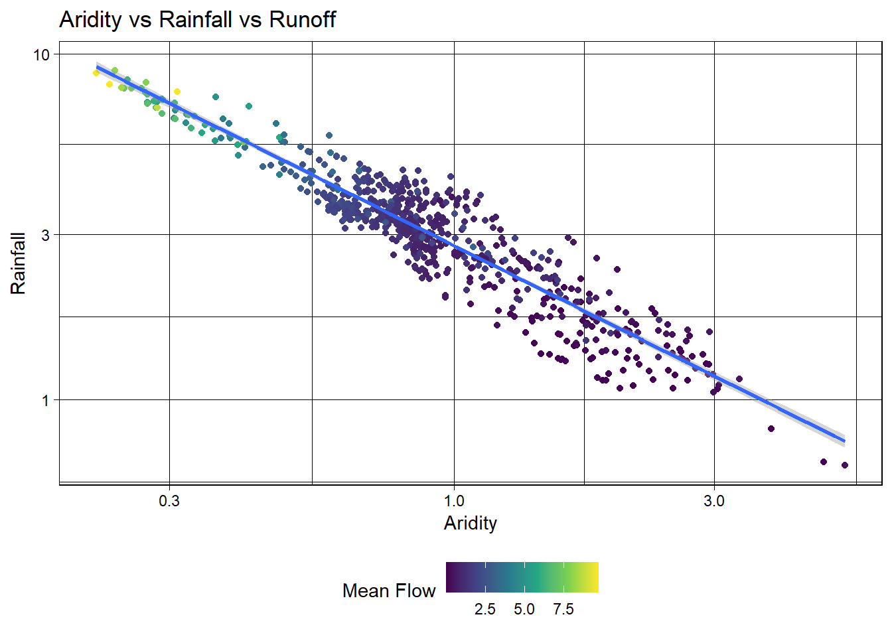
ggplot(camels, aes(x = aridity, y = p_mean)) +geom_point(aes(color = q_mean)) +geom_smooth(method ="lm") +# Apply a log transformation to the color scalescale_color_viridis_c(trans ="log") +scale_x_log10() +scale_y_log10() +theme_linedraw() +theme(legend.position ="bottom",# Expand the legend width ...legend.key.width =unit(2.5, "cm"),legend.key.height =unit(.5, "cm")) +labs(title ="Aridity vs Rainfall vs Runoff",x ="Aridity",y ="Rainfall",color ="Mean Flow")
`geom_smooth()` using formula = 'y ~ x'
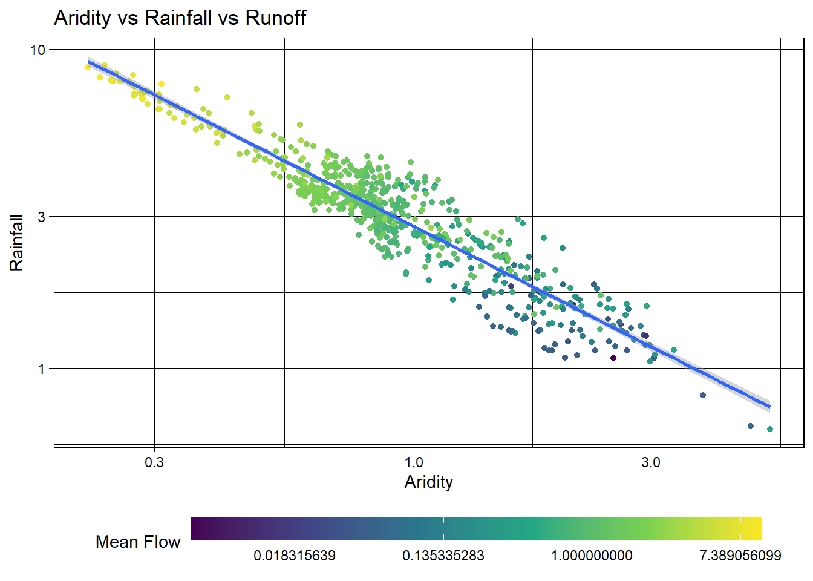
## Question 3
set.seed(123)# Bad form to perform simple transformations on the outcome variable within a # recipe. So, we'll do it here.camels <- camels |>mutate(logQmean =log(q_mean))# Generate the splitcamels_split <-initial_split(camels, prop =0.8)camels_train <-training(camels_split)camels_test <-testing(camels_split)camels_cv <-vfold_cv(camels_train, v =10)
rec <-recipe(logQmean ~ aridity + p_mean, data = camels_train) %>%# Log transform the predictor variables (aridity and p_mean)step_log(all_predictors()) %>%# Add an interaction term between aridity and p_meanstep_interact(terms =~ aridity:p_mean) |># Drop any rows with missing values in the predstep_naomit(all_predictors(), all_outcomes())# Prepare the databaked_data <-prep(rec, camels_train) |>bake(new_data =NULL)# Interaction with lm# Base lm sets interaction terms with the * symbollm_base <-lm(logQmean ~ aridity * p_mean, data = baked_data)summary(lm_base)
Call:
lm(formula = logQmean ~ aridity * p_mean, data = baked_data)
Residuals:
Min 1Q Median 3Q Max
-2.91162 -0.21601 -0.00716 0.21230 2.85706
Coefficients:
Estimate Std. Error t value Pr(>|t|)
(Intercept) -1.77586 0.16365 -10.852 < 2e-16 ***
aridity -0.88397 0.16145 -5.475 6.75e-08 ***
p_mean 1.48438 0.15511 9.570 < 2e-16 ***
aridity:p_mean 0.10484 0.07198 1.457 0.146
---
Signif. codes: 0 '***' 0.001 '**' 0.01 '*' 0.05 '.' 0.1 ' ' 1
Residual standard error: 0.5696 on 531 degrees of freedom
Multiple R-squared: 0.7697, Adjusted R-squared: 0.7684
F-statistic: 591.6 on 3 and 531 DF, p-value: < 2.2e-16
# A tibble: 3 × 3
.metric .estimator .estimate
<chr> <chr> <dbl>
1 rmse standard 0.583
2 rsq standard 0.742
3 mae standard 0.390
ggplot(test_data, aes(x = logQmean, y = lm_pred, colour = aridity)) +# Apply a gradient color scalescale_color_gradient2(low ="brown", mid ="orange", high ="darkgreen") +geom_point() +geom_abline(linetype =2) +theme_linedraw() +labs(title ="Linear Model: Observed vs Predicted",x ="Observed Log Mean Flow",y ="Predicted Log Mean Flow",color ="Aridity")
# Define modellm_model <-linear_reg() %>%# define the engineset_engine("lm") %>%# define the modeset_mode("regression")# Instantiate a workflow ...lm_wf <-workflow() %>%# Add the recipeadd_recipe(rec) %>%# Add the modeladd_model(lm_model) %>%# Fit the model to the training datafit(data = camels_train) # Extract the model coefficients from the workflowsummary(extract_fit_engine(lm_wf))$coefficients
# Predictions on the test setrf_data <-augment(final, new_data = camels_test)# Regression metrics (rmse, rsq, mae by default)metrics(rf_data, truth = logQmean, estimate = .pred)
# A tibble: 3 × 3
.metric .estimator .estimate
<chr> <chr> <dbl>
1 rmse standard 0.591
2 rsq standard 0.738
3 mae standard 0.366
ggplot(rf_data, aes(x = logQmean, y = .pred, colour = aridity)) +scale_color_viridis_c() +geom_point() +# 1:1 line — perfect predictiongeom_abline(linetype =2) +# Actual regression line for contrastgeom_smooth(method ="lm", col ='red', linetype =2, se =FALSE) +theme_linedraw() +labs(title ="Random Forest Model: Observed vs Predicted",x ="Observed Log Mean Flow",y ="Predicted Log Mean Flow",color ="Aridity")
`geom_smooth()` using formula = 'y ~ x'
Question 3
Extend the workflow_set above (which already contains the linear model and the random forest) by adding two more models from the Week 6-1 zoo:
Build an xgboost (engine) regression (mode) model using boost_tree Build a neural network model using the nnet engine from the baguette package using the bag_mlp function Add both to the workflow set and refit against the resamples Compare all four (linear, random forest, xgboost, neural network) with autoplot() and rank_results() Which of the four would you move forward with? Justify the pick in 2–3 sentences.
The neural network has the highest accuracy and best R2. However, it is the least explainable, and only produces marginal gains over the linear regression. For this reason, I would choose linear regression. It is only slightly less accurate than random forest and the neural net and is interpretable.
Question 4: Predict mean streamflow from camels data.
library(skimr)
Warning: package 'skimr' was built under R version 4.4.3
set.seed(123)# pick variables I think might help predict mean q that don't already have mean q. I.e., we shouldn't model mean q with q5 or q95... I'm sure that would be really accurate but it's not realistic to have those variables but not q_mean.preds <-c('q_mean', 'p_mean', 'pet_mean', 'aridity', 'frac_snow', 'elev_mean', 'slope_mean', 'frac_forest', 'lai_max')cm <- camels |>select(all_of(preds), gauge_id, gauge_lat, gauge_lon)skim(cm)
Data summary
Name
cm
Number of rows
671
Number of columns
12
_______________________
Column type frequency:
character
1
numeric
11
________________________
Group variables
None
Variable type: character
skim_variable
n_missing
complete_rate
min
max
empty
n_unique
whitespace
gauge_id
0
1
8
8
0
671
0
Variable type: numeric
skim_variable
n_missing
complete_rate
mean
sd
p0
p25
p50
p75
p100
hist
q_mean
1
1
1.49
1.54
0.00
0.63
1.13
1.75
9.69
▇▁▁▁▁
p_mean
0
1
3.26
1.41
0.64
2.37
3.23
3.78
8.94
▃▇▂▁▁
pet_mean
0
1
2.79
0.55
1.90
2.34
2.69
3.15
4.74
▇▇▅▂▁
aridity
0
1
1.06
0.62
0.22
0.70
0.86
1.27
5.21
▇▂▁▁▁
frac_snow
0
1
0.18
0.20
0.00
0.04
0.10
0.22
0.91
▇▂▁▁▁
elev_mean
0
1
759.42
786.00
10.21
249.67
462.72
928.88
3571.18
▇▂▁▁▁
slope_mean
0
1
46.20
47.12
0.82
7.43
28.80
73.17
255.69
▇▂▂▁▁
frac_forest
0
1
0.64
0.37
0.00
0.28
0.81
0.97
1.00
▃▁▁▂▇
lai_max
0
1
3.22
1.52
0.37
1.81
3.37
4.70
5.58
▅▆▃▅▇
gauge_lat
0
1
39.24
5.21
27.05
35.70
39.25
43.21
48.82
▂▃▇▆▅
gauge_lon
0
1
-95.79
16.21
-124.39
-110.41
-92.78
-81.77
-67.94
▆▃▇▇▅
library(ape)
Warning: package 'ape' was built under R version 4.4.3
Attaching package: 'ape'
The following object is masked from 'package:rsample':
complement
The following object is masked from 'package:dials':
degree
The following object is masked from 'package:dplyr':
where
library(ggcorrplot)
Warning: package 'ggcorrplot' was built under R version 4.4.3
library(spatialsample)
Warning: package 'spatialsample' was built under R version 4.4.3
library(sf)
Warning: package 'sf' was built under R version 4.4.3
Linking to GEOS 3.13.0, GDAL 3.10.1, PROJ 9.5.1; sf_use_s2() is TRUE
dists <-as.matrix(dist(cbind(cm$gauge_lon, cm$gauge_lat)))weights <-1/distsdiag(weights) <-0# look at histograms, r, and morans Ifor (col_name in preds) {hist(cm[[col_name]], main =paste("Histogram of", col_name)) moran_result <-Moran.I(cm[[col_name]], weights, na.rm =TRUE)# Extract the observed I value and P-value i <-round(moran_result$observed, 4) p <-round(moran_result$p.value, 4)print(paste(col_name, 'i:', i, 'p:', p))}
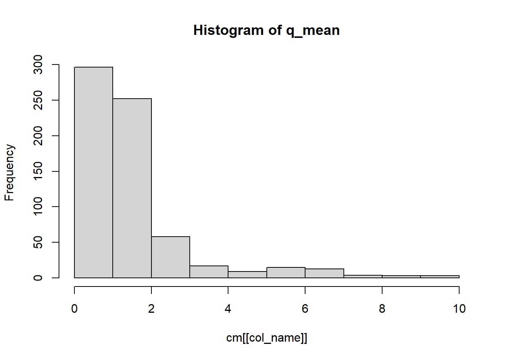
[1] "q_mean i: 0.4494 p: 0"
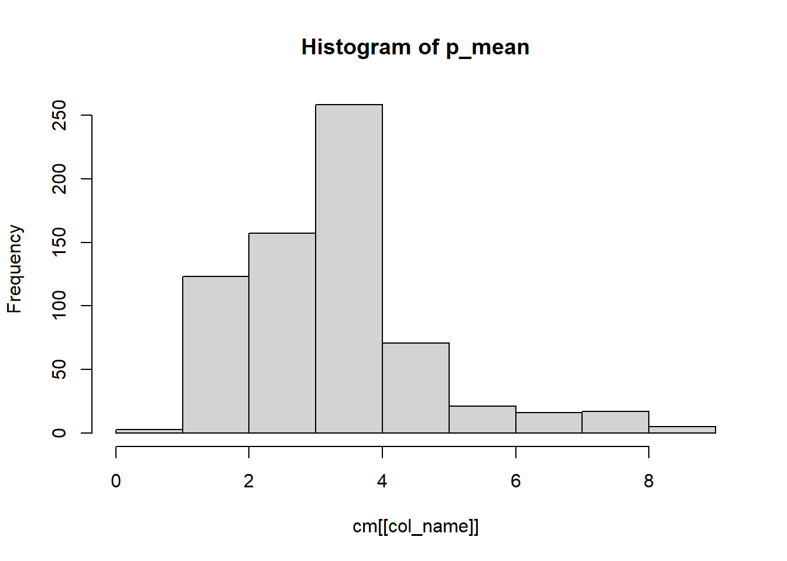
[1] "p_mean i: 0.4342 p: 0"
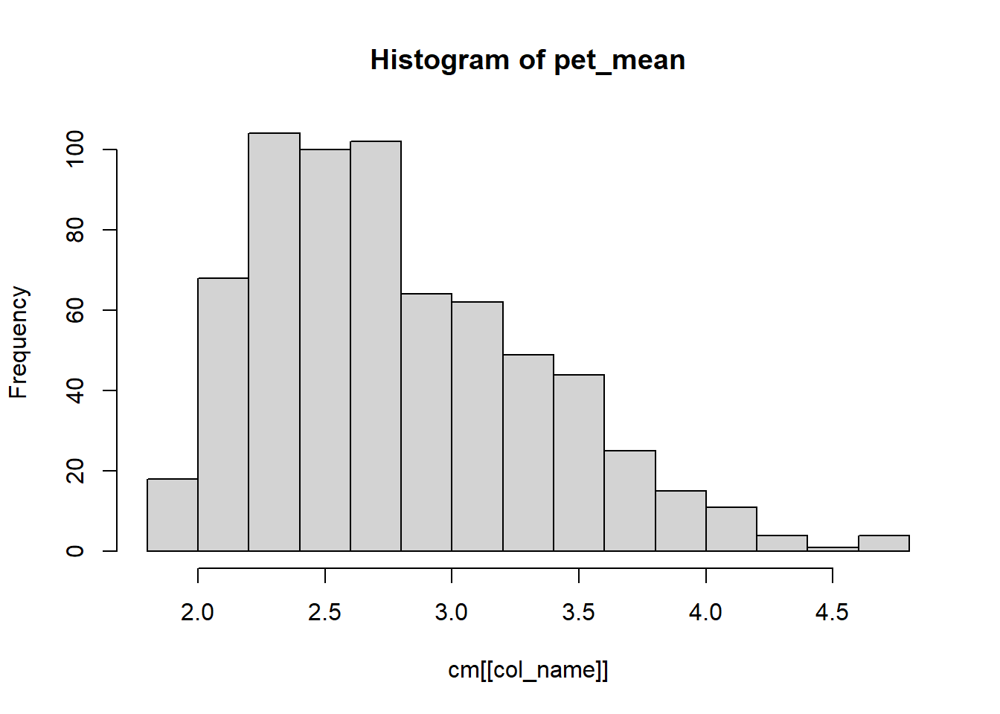
[1] "pet_mean i: 0.3024 p: 0"
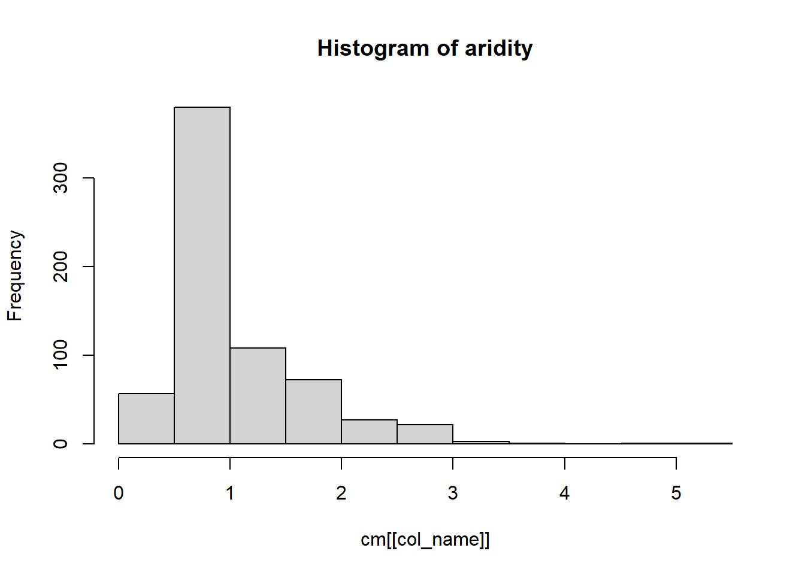
[1] "aridity i: 0.3533 p: 0"
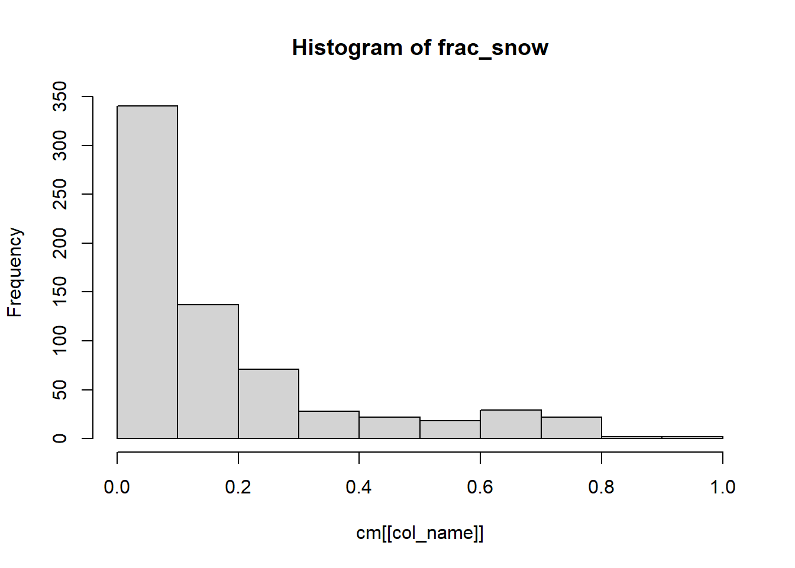
[1] "frac_snow i: 0.3571 p: 0"
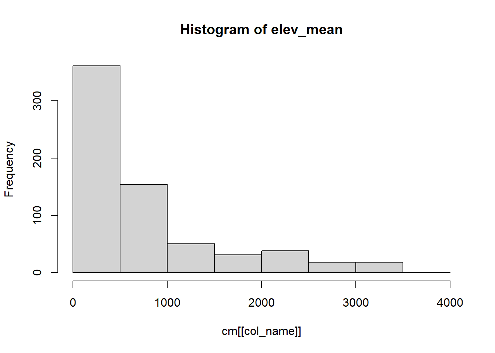
[1] "elev_mean i: 0.4219 p: 0"
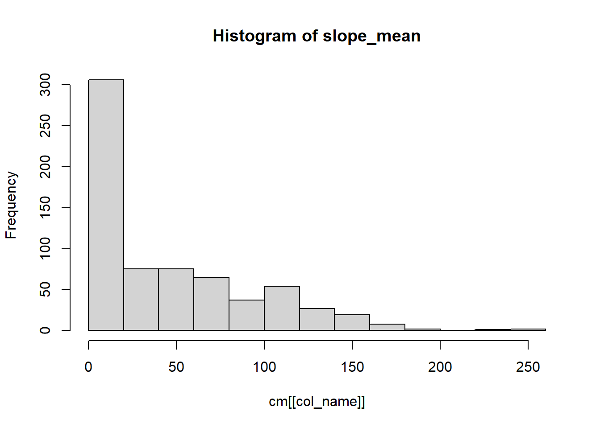
[1] "slope_mean i: 0.4404 p: 0"
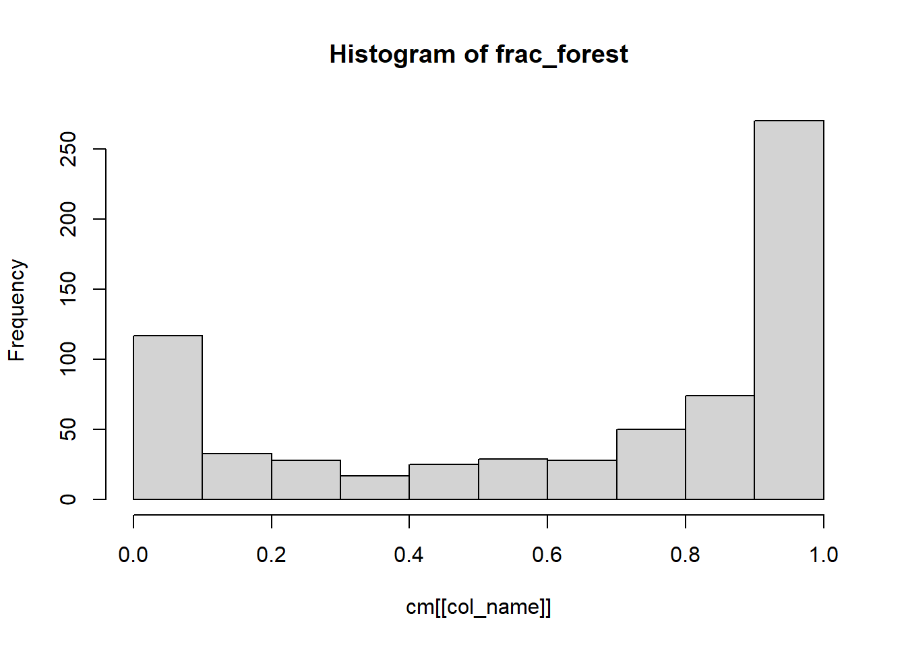
[1] "frac_forest i: 0.2799 p: 0"
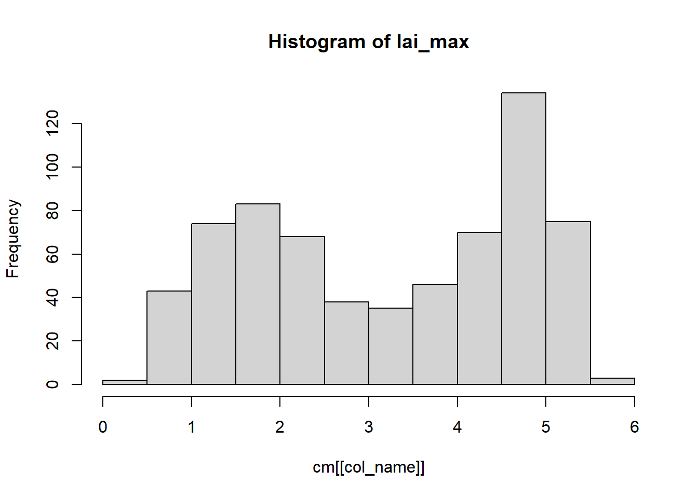
[1] "lai_max i: 0.3782 p: 0"
# Plot the corr matrixcorr <-round(cor(cm |>select(all_of(preds)), use ="complete.obs"), 2)ggcorrplot(corr, hc.order =TRUE, type ="lower", lab =TRUE)
Warning: `aes_string()` was deprecated in ggplot2 3.0.0.
ℹ Please use tidy evaluation idioms with `aes()`.
ℹ See also `vignette("ggplot2-in-packages")` for more information.
ℹ The deprecated feature was likely used in the ggcorrplot package.
Please report the issue at <https://github.com/kassambara/ggcorrplot/issues>.
rec <-recipe(log_q_mean ~ p_mean + frac_forest + frac_snow + pet_mean + slope_mean, data = cm_train) %>%# Log transform the predictor variables except p_mean (looks normal enough)step_log(frac_forest, frac_snow, slope_mean, pet_mean, offset =0.01) %>%# Add an interaction term between aridity and p_mean#step_interact(terms = ~ slope_mean:p_mean) |> # Drop any rows with missing values in the predstep_naomit(all_predictors(), all_outcomes())
Frac_forest informs the model about transpiration. Slope informs the model about how much water produces runoff rather than is lost to deep groundwater recharge. P_mean, and pet_mean are likely the most important predictors. Aridity is just p_mean/pet_mean so we don’t need that. lai_max and elevation are highly collinear with other predictors so I don’t want them.
# RF model: handles non-linearityrf_model <-rand_forest() %>%set_engine("ranger", importance ="impurity") %>%set_mode("regression")# NEURAL NET: most black box but tons of predictive powermlp_model <-mlp(hidden_units =32, epochs =50, activation ='linear', learn_rate =1E-2, engine='nnet', mode='regression')# simplest model, captures linear relationshipslm_model <-linear_reg() %>%# define the engineset_engine("lm") %>%# define the modeset_mode("regression")
In the non-spatial CV, the neural net model was slightly better than the neural network. The best RMSE and R2 was 0.35 and 0.91, respectively. However, this model does not consider spatial autocorrelation and so it’s not as good of a representation of the model’s true accuracy for data it has not seen. The spatial CV produced slightly lower accuracy, but it’s a more “honest” representation of accuracy. The random forest performed slighly better for spatial CV.
# I chose the random forest. It's accuracy is highestrf_model2 <-rand_forest(mtry =tune(),min_n =tune(),trees =500 ) %>%set_engine("ranger") %>%set_mode("regression")rf_grid <-grid_regular(mtry(range =c(1, 6)), # predictors sampled per splitmin_n(range(2, 10)))rf_tuning <-tune_grid( rf_model2,preprocessor = rec, resamples = spatial_cv,grid = rf_grid,control =control_grid(save_pred =TRUE))
→ A | warning: ! 6 columns were requested but there were 5 predictors in the data.
ℹ 5 predictors will be used.
There were issues with some computations A: x1
There were issues with some computations A: x7
There were issues with some computations A: x12
There were issues with some computations A: x15
There were issues with some computations A: x21
There were issues with some computations A: x25
There were issues with some computations A: x31
There were issues with some computations A: x37
There were issues with some computations A: x43
There were issues with some computations A: x48
There were issues with some computations A: x51
There were issues with some computations A: x57
There were issues with some computations A: x60
autoplot(rf_tuning)
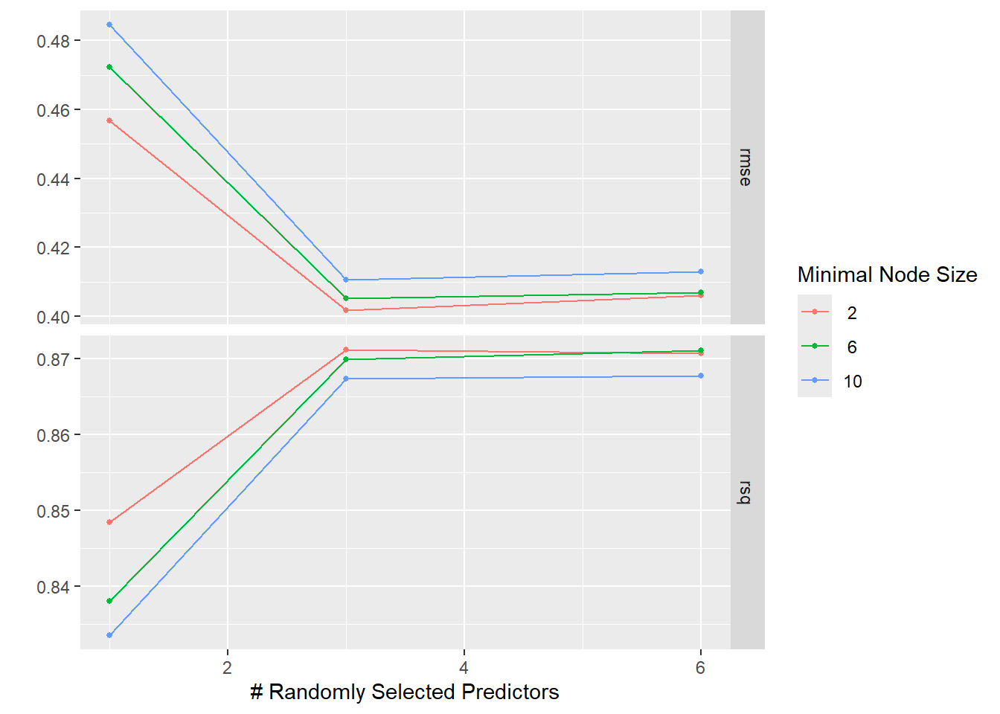
show_best(rf_tuning, metric ="rsq")
# A tibble: 5 × 8
mtry min_n .metric .estimator mean n std_err .config
<int> <int> <chr> <chr> <dbl> <int> <dbl> <chr>
1 3 2 rsq standard 0.871 10 0.0169 pre0_mod4_post0
2 6 6 rsq standard 0.871 10 0.0178 pre0_mod8_post0
3 6 2 rsq standard 0.871 10 0.0183 pre0_mod7_post0
4 3 6 rsq standard 0.870 10 0.0175 pre0_mod5_post0
5 6 10 rsq standard 0.868 10 0.0185 pre0_mod9_post0
The model is most sensitive to the mtry hyperparameter which is the number of predictors that will be randomly sampled at each split. The best value for this parameter is 3. The min_n parameter does not significantly change the model results. Values of 2, 6, and 10 all produced almost the same accuracy.
As expected, precipipation is the most important variable. More precipitation, more streamflow. Fraction of forest and slope are also strong predictors. High slopes promote runoff rather than infilltration, and forests transpire a lot of water. Surprisingly, PET is not very important. Fraction of snow was also not a strong predictor, although snow dominated watersheds typically have higher runoff ratios.
# I already finalized the model when I made finalfinal <-workflow() |>add_recipe(rec) |>add_model(finalize_model(rf_model, best_rf_params))final <-finalize_workflow(final, best_rf_params)final <-last_fit(final, split=cm_split)metrics <- final %>%collect_metrics()print(metrics)
# A tibble: 2 × 4
.metric .estimator .estimate .config
<chr> <chr> <dbl> <chr>
1 rmse standard 0.331 pre0_mod0_post0
2 rsq standard 0.914 pre0_mod0_post0
rmse <-round(exp(metrics$.estimate[1]),2)rsq <-round(metrics$.estimate[2],2)cm_test <- final %>%extract_workflow() %>%augment(new_data =testing(cm_split))# untransform it. Regular ppl don't want to see log flow.cm_test$q_mean_pred =exp(cm_test$.pred)cm_test |>ggplot(aes(x = q_mean_pred, y = q_mean, color=aridity)) +scale_color_viridis_c(option ="magma") +geom_point(alpha =0.5) +geom_abline(lty =2, color ="red") +labs(title ="Observed vs. Predicted Q",x ="Predicted Q (mmd)",y ="Observed Q (mmd)",subtitle =paste('RMSE:', rmse, 'mmd', 'R2:', rsq) ) +coord_obs_pred()
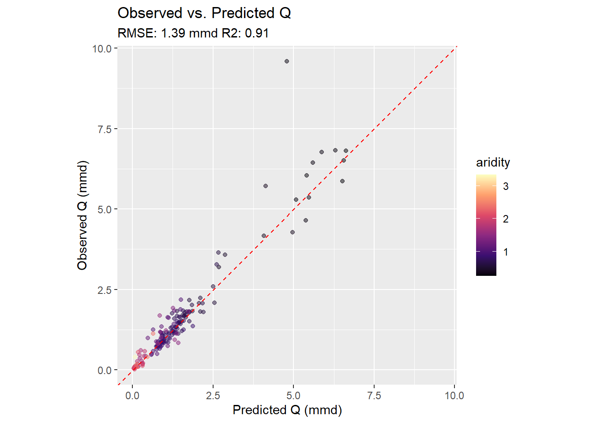
The model performs very well. An R2 of 0.91 is exceptionally high. The test set performed slightly better than the spatial CV. This is surprising, but it could be due to our hyperparameter tuning or just random chance. The model has very low bias as the residuals are scattered evenly around the 1:1 line. There is one notable outlier where Q is underpredicted.